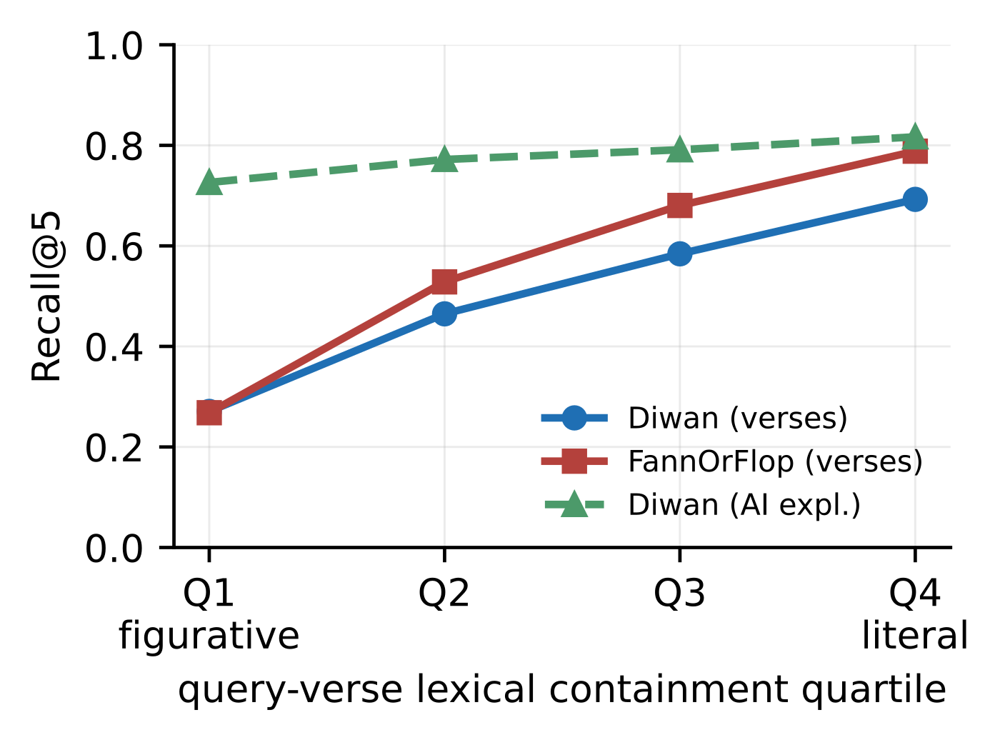
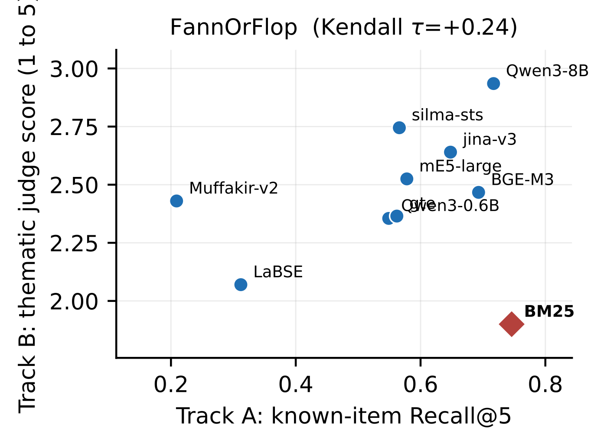

目录 · 9 节
1它到底在解决什么问题？2实验怎么设计3发现一：谁赢取决于查询4发现二：同一个改进手段，效果正负相反5发现三：两种评测方法给出相反的排名6落地：融合检索要看查询类型7我认为的局限8一个团队可以怎么试9一句话结论在古典阿拉伯诗歌库里找诗，关键词检索 BM25 和向量模型谁更好？这篇论文发现，答案主要取决于用户还记得多少原文。用户半记得几句原话时，BM25 比 9 个向量模型都好，包括 80 亿参数的 Qwen3-Embedding-8B（前 5 条召回率 0.746 对 0.717）；用户只能描述诗讲了什么时，BM25 掉到 10 个系统里的第 8 名（0.392 对 0.748）。作者通过改写同一批查询证明，排名主要由查询里有没有原文决定。给查询补上半句原诗，BM25 的召回率涨 37.8 个点；把融合检索里的 BM25 通道加进去，在“半记得原文”的查询集上多 6.1 个点，在“只记得主题”的查询集上反而少 9.7 个点。
我的判断：做内容检索的团队都值得读，不只是做阿拉伯语或诗歌的。它的结论可以直接迁移：同一个检索系统在不同类型的查询上，最优方案可能完全相反，所以选方案之前要先弄清楚用户的查询里带不带原文。实验设计也值得学，作者不是只比较两个数据集，而是直接改写同一批查询来验证因果。局限是语料只有古典阿拉伯诗歌，查询由作者自己编写，规模也只有约 500 条。
它到底在解决什么问题？
古典阿拉伯诗歌对检索很不友好。阿拉伯语的词根变化多，书写时通常省略元音符号，诗里又大量使用双关和比喻，字面和实际意思差得很远。所以它常被当作检验“向量模型能不能按意思而不是按字面检索”的难题。
作者原本想回答一个简单的问题：现在的向量模型检索古典阿拉伯诗歌效果怎么样？结果发现这个问题没有唯一答案。用户来找诗时记得的东西不一样：有人记得半句原文，有人只记得诗讲了什么。查询处在这条“抽象程度”的哪个位置，决定了哪个检索器赢、赢多少，以及常用的改进手段是帮忙还是添乱。
实验怎么设计
作者用了两个语料库，每首诗切成相互重叠的三行一段，分别编码，取段落得分的最大值作为整首诗的得分。
- Fann or Flop：4687 首诗，带人工撰写的诗句释义。配套的 244 条查询模拟“半记得这首诗”的用户，写查询的人看过原诗，可以自由写进记得的原文，其中 32.8% 和目标诗有连续三个词完全相同。
- Diwan：为了控制计算量，从一个 1400 万行的语料里抽了最常见的 50 位诗人、每人 70 首，共 3500 首。配套的 258 条查询刻意写成对内容的抽象描述，只有 2.7% 含原文。
比如一条半记得原文的查询是“一首讽刺丑陋情人的诗，开头是：多说也好少说也罢，我们已经厌倦了你”；一条抽象查询是“一首否定灵魂转世、劝人只相信理性的哲理诗”，和原诗没有任何相同的词。
参赛的有 9 个向量模型（包括 Qwen3-Embedding 0.6B 和 8B、BGE-M3、多语言 E5、jina-v3 等）和 BM25。索引有三种：原诗、用 Gemini 生成的白话释义替换原诗，以及 Fann or Flop 自带的人工释义。主要指标是前 5 条召回率，也就是目标诗出现在前 5 条结果里的查询比例。
发现一：谁赢取决于查询
在 Fann or Flop 上，BM25 排第一，比 Qwen3-8B 高（0.746 对 0.717，差距不显著）；在 Diwan 上，BM25 掉到第 8 名，Qwen3-8B 领先 36 个点。同一个模型家族从 0.6B 换到 8B，在两个语料上各涨 17 和 22 个点，但 8B 在 Fann or Flop 上还是没超过 BM25，说明光靠加大模型补不上这个差距。
不过两个语料库和两种查询风格是同时变化的，单看这个对比分不清是哪个因素起作用。所以作者在同一个语料库里做了两步验证。
第一步是分组。把 Fann or Flop 的 244 条查询按“是否和目标诗有连续三个词相同”分成两组：80 条含原文，164 条不含。BM25 在含原文的那组里全部命中（召回率 1.000），在不含原文的那组掉到 0.622。在不含原文的查询上，BM25 和 Qwen3-8B 已经没有显著差别（0.622 对 0.646）。所以 BM25 的总体领先完全来自含原文的那部分查询。
第二步是直接改写同一批查询，保持信息需求和目标诗不变：
| 改写方式 | BM25 召回率变化 | Qwen3-8B 召回率变化 |
|---|---|---|
| 不含原文的查询补上开头半句原诗 | 提高 37.8 个点 | 提高 23.2 个点 |
| 补上中间半句 | 提高 37.8 个点 | 提高 20.7 个点 |
| 补上结尾半句 | 提高 37.8 个点 | 提高 12.8 个点 |
| 含原文的查询把原文手工改写掉 | 降低 35.4 个点 | 降低 19.0 个点 |
上表说明，加上原文后 BM25 涨得最多，去掉原文后它也跌得最多，两种操作下它和 Qwen3-8B 的差异都显著。向量模型也受影响，只是没那么敏感。去掉原文之后，BM25 和 Qwen3-8B 打成平手，和自然不含原文的那组一样。作者还用回归控制了查询长度、专有名词、目标诗长度等因素，词重合度的影响基本不变。
发现二：同一个改进手段，效果正负相反
诗句难懂，一个自然的想法是把每句诗换成白话释义再建索引。结果这个做法的效果完全取决于查询类型。
在抽象查询的 Diwan 上，用 AI 释义替换原诗让所有 10 个系统都变好，BM25 从 0.392 涨到 0.760，提高 37 个点。在半记得原文的 Fann or Flop 上，同样的替换让大多数系统变差，BM25 从 0.746 跌到 0.357，降低 39 个点，因为用户记得的原文在释义里已经没有了。

上图说明这个效应是连续的，不是非此即彼：查询和原诗的字面重合越少，原诗索引越难找到，释义索引帮得越多。作者进一步发现，对 BM25 来说，释义带来的字面重合变化最能预测检索结果；对向量模型来说，向量相似度的变化更能预测结果。也就是说，BM25 靠字面搭桥，向量模型靠语义搭桥。
发现三：两种评测方法给出相反的排名
除了找某一首特定的诗，作者还测了按主题浏览：200 条只给主题的查询，比如“白发及其对人心理的影响”，没有标准答案，用大模型给前 3 条结果打 1 到 5 分。

在主题浏览上，BM25 在两个语料库上都是最后一名，显著差于 9 个向量模型中的 8 个。作者用两位标注者的盲评、另外两个不同家族的开源模型当评委，结论都一样。去掉评分标准里“字面匹配”那一项，BM25 的排名也基本不变。BM25 只在“结果是否重复了查询的字面”这一项上排第一。
落地：融合检索要看查询类型
作者测了倒数排名融合（RRF，把几路检索结果按排名倒数加权合并），候选的三路是：用 Qwen3-8B 检索原诗索引、用 Qwen3-8B 检索释义索引、用 BM25 检索原诗，作者比较了这三路的各种组合。把释义索引和原诗索引融合在两个语料上都有帮助，可以作为默认做法。但加不加 BM25 这一路要看场景：在 Fann or Flop 上，带 BM25 的最佳组合是 0.885，比不带的 0.824 高 6.1 个点；在 Diwan 上，带 BM25 的最佳组合是 0.833，比单用释义索引的 0.930 低 9.7 个点。换成其他 8 个向量模型，这个规律都成立。
所以服务“半记得原文”读者的档案库应该保留 BM25 通道，服务主题浏览的则不该加。
我认为的局限
第一，场景特殊。古典阿拉伯诗歌的字面和意思差距特别大，换成新闻或商品检索，这个效应的大小可能不同。
第二，查询是作者自己写的，两种风格是按不同指令刻意写出来的，真实用户的查询分布未必是这样。规模也只有约 500 条找诗查询和 200 条主题查询。
第三，AI 释义的质量一般，作者抽查 50 条，只有 60% 完全准确，8% 理解错了诗意。更好的释义可能改变部分结论。
一个团队可以怎么试
- 从线上日志里抽几百条查询，统计它们和点击文档之间的字面重合度，看你的用户更像“记得原文”还是“只记得主题”。
- 按重合度分组，分别评估 BM25、向量检索和融合方案，而不是只看总体指标。
- 如果两类查询都多，可以先判断查询是否含原文，再决定融合时 BM25 通道的权重。
- 考虑用大模型给文档生成释义并和原文融合建索引，这一步在两类查询上都有帮助。
一句话结论
检索器谁好谁坏，很大程度上由用户查询里带了多少原文决定；带原文时 BM25 难以被超越，只记得主题时向量模型大幅领先，融合方案也要按查询类型来配。
| 维度 | 评价 |
|---|---|
| 问题重要性 | 中。直接对象是诗歌档案，但“查询类型决定方案”的结论适用于各种检索 |
| 方法创新性 | 中。结论本身在检索领域有先例，新意在于用改写同一批查询来验证因果 |
| 实验证据 | 较强。10 个系统、改写实验、显著性检验、人工盲评和多个评委交叉验证 |
| 工程成本 | 低。分析方法简单，查询集公开 |
| 是否值得尝试 | 值得按查询类型拆开评估自己的检索系统 |